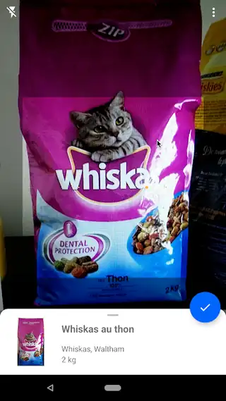
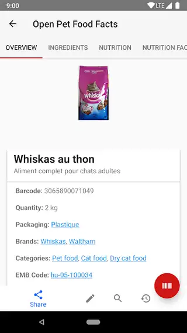

Open Pet Food Facts
صحة ورياضة
Scan pet food products or their barcode to obtain data on ingredients, additives and nutrition facts. The app allows to view the over 10.000 pet products already contained in the free and open database Open Pet Food Facts, and also to add pictures and data for missing products. To discover the Open
✓ ترخيص مفتوح (Apache-2.0) · آخر تحديث: 2022-03-30
3.9.0الإصدار
12.9 MBالحجم
Apache-2.0الرخصة
Open in Kanzتحميل APK (12.9 MB)
Download APK
SHA-256: 26c864cfa4a5959743023c070406db7c5c5fb5ec0551197b6da87cf2e1d17118


امسح الكود لفتح صفحة التطبيق
Scan to open this app page
لو كنز مش متثبت عندك: نزّل متجر كنز.
Not installed? Get the Kanz store.